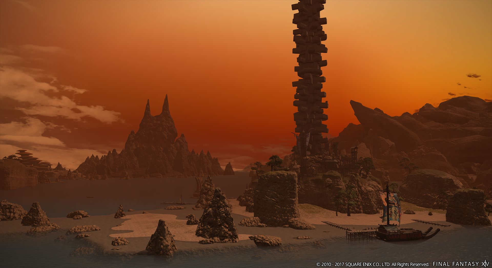
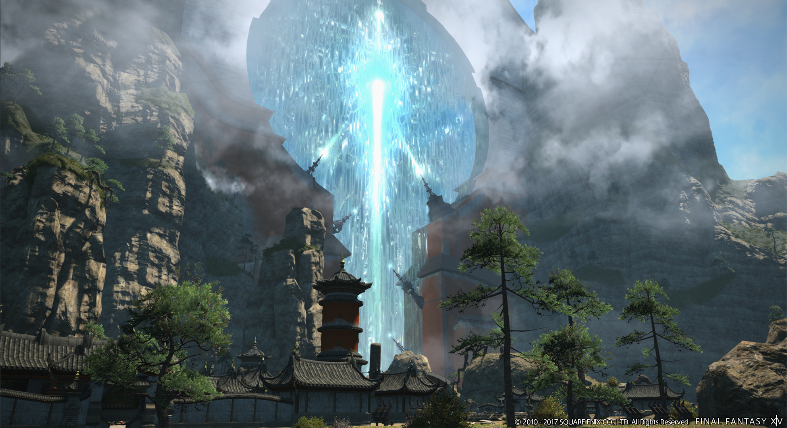
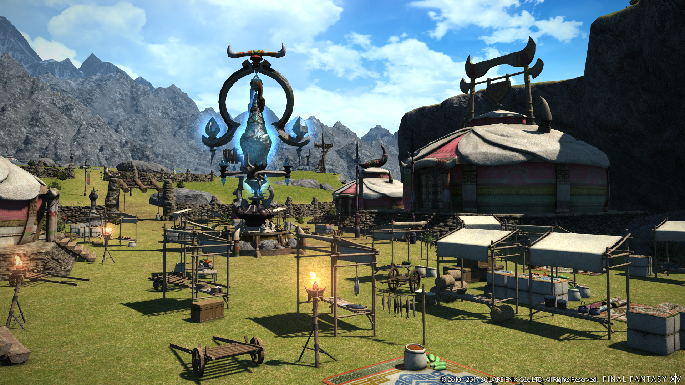
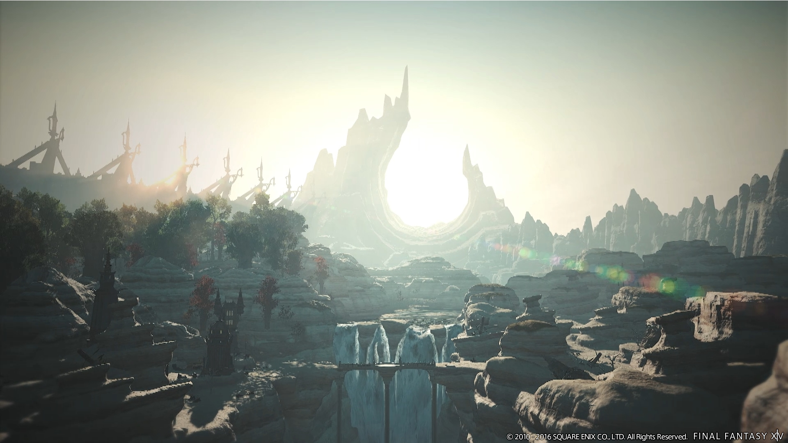
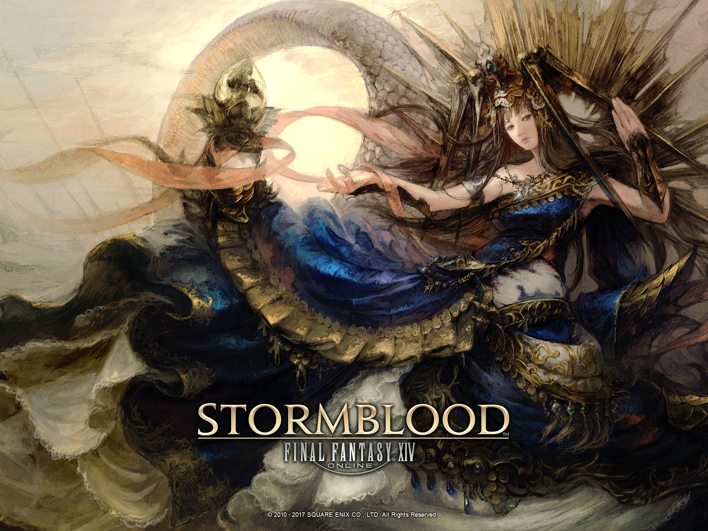

| Home | Main Character | Website |
|---|
Editor:Sean Yang
A city across the Ruby Sea from Othard, Kugane stands as the only port in Hingashi whose docks remain open to foreign vessels in the era of occupation. Here, ships from all corners of the world can be found, and it is not uncommon to even see Eorzean galleys and Garlean warships docked side-by-side. The bustling center of trade boasts a beautiful cityscape and also serves as a den of espionage and political intrigue.
Separating Othard and Hingashi yet ruled by neither, the Ruby Sea has, for as long as anyone can remember, been controlled by the Confederacy. To this day it remains free of any outside influence and is inhabited by a variety of peoples and beastmen, including the turtle-like Kojin.
Through Yanxia flows the One River, upon whose shores the kingdom of Doma has been built. Having fallen to Garlean rule, the nation's once proud and mighty Doma Castle is now occupied by the imperial viceroy and her host of brutish men. Citizens here struggle to eke out a living in the face of oppression, which comes in the form of punishing taxes and grueling physical labor.
A vast expanse of grassland that stretches across the far reaches of northern Othard, the Azim Steppe is said to be the ancestral home of the Au Ra, and remains to this day the home of the nomadic Xaela clan. Devout worshipers of the Dawn Father and the Dusk Mother─Azim and Nhaama─the Xaela are known for their unique set of beliefs. They are divided into fifty different tribes, all of which are very territorial and are engaged in a constant and fierce battle for land.
A region formerly controlled by the city-state of Ala Mhigo. Located in the eastern reaches of Abalathia’s Spine, surrounded by perilous mountains, the area was known for its strict devotion to the deity Rhalgr. This changed, however, after the occupation as the area’s temples were laid to waste.
Lord of the Revel, summoned by the Kojin tribe in an act of desperation. From the myriad of deities housed within the three sacred treasures of the Kojin, Susano stepped forth to answer their pleas for deliverance. This divinity of the sea sees battle as a celebration, but challengers will find no revelry nor mercy at the edge of his fabled blade, Ame no Murakumo.
The Lady of Bliss, beloved deity of the serpentine Ananta tribe. Legends tell of a beauty without equal, a benevolent goddess whose coming brings the promise of halcyon days and bountiful harvests. Some believe she has imparted her life-bestowing powers to her most fervent followers─the Ananta. Lakshmi, in her infinite mercy, would shelter them from harm, granting them succor with her alluring embrace.
From the question of its origin to the very nature of its existence, much about Omega is shrouded in mystery. Employed by the Allagan Empire to capture Bahamut, it remained in an eras-long stasis until recently, when it was roused to contend with the threat of another primal. In the course of this mission, however, it vanished within the rocky expanse of Gyr Abania...